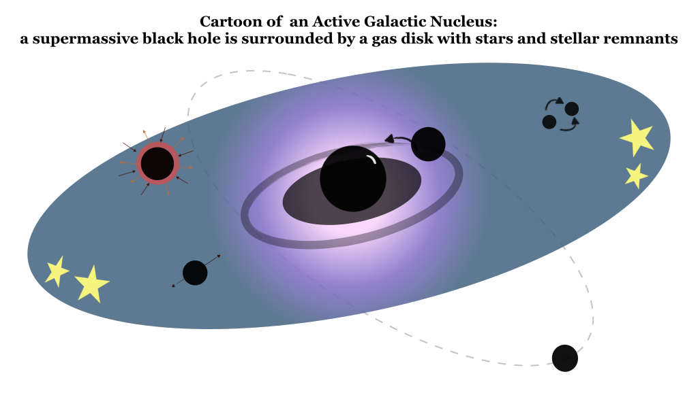
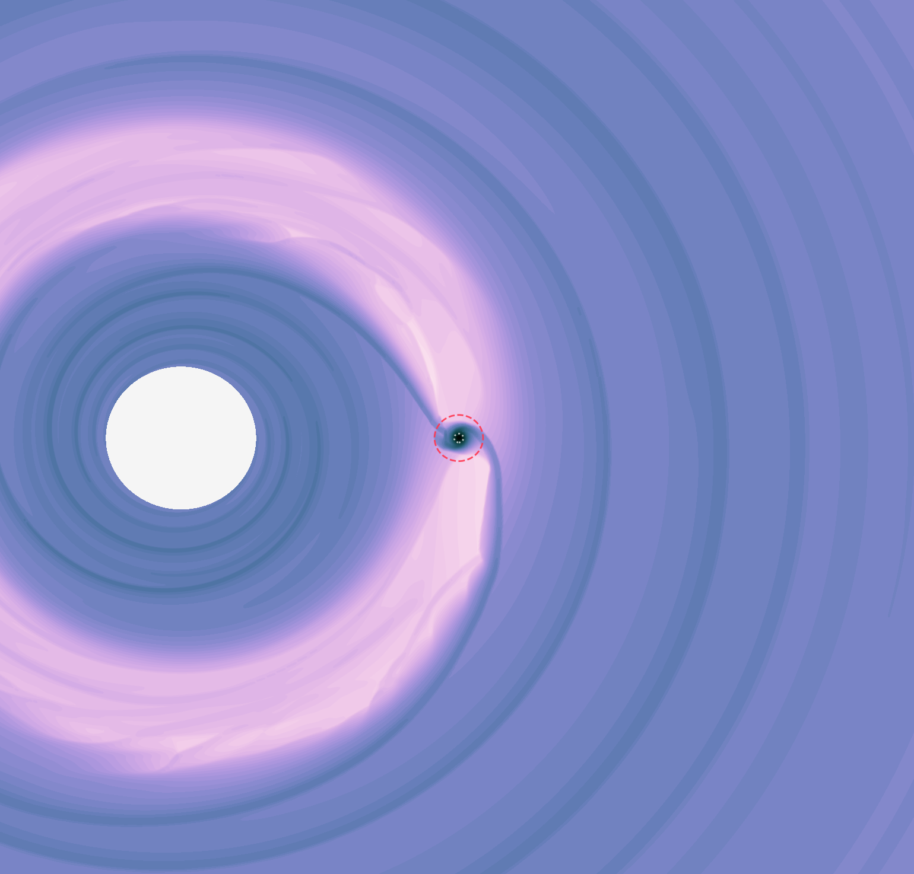
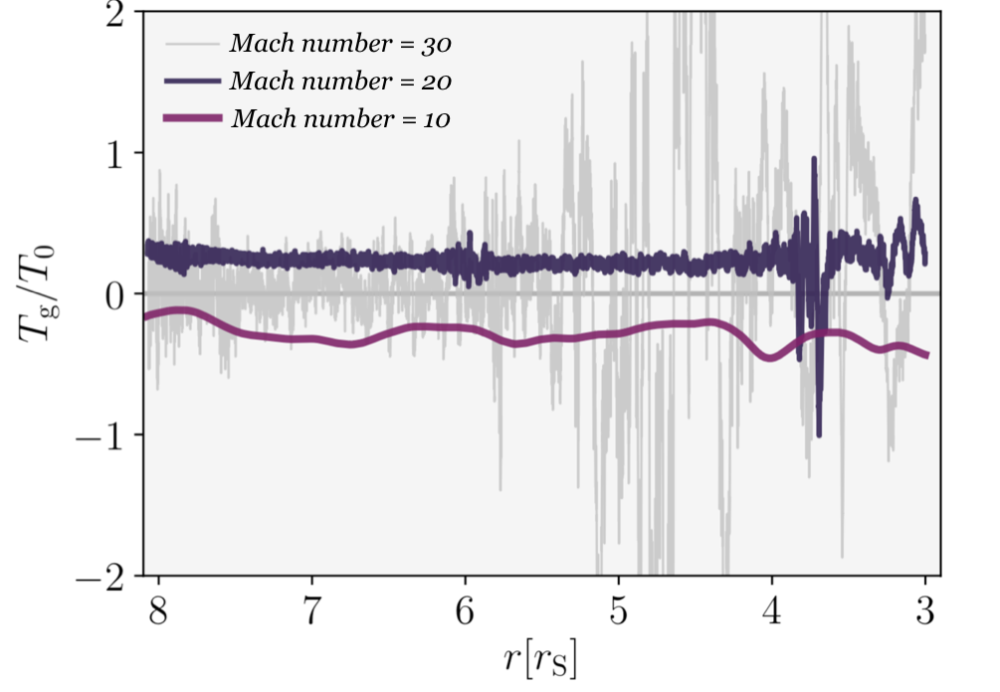
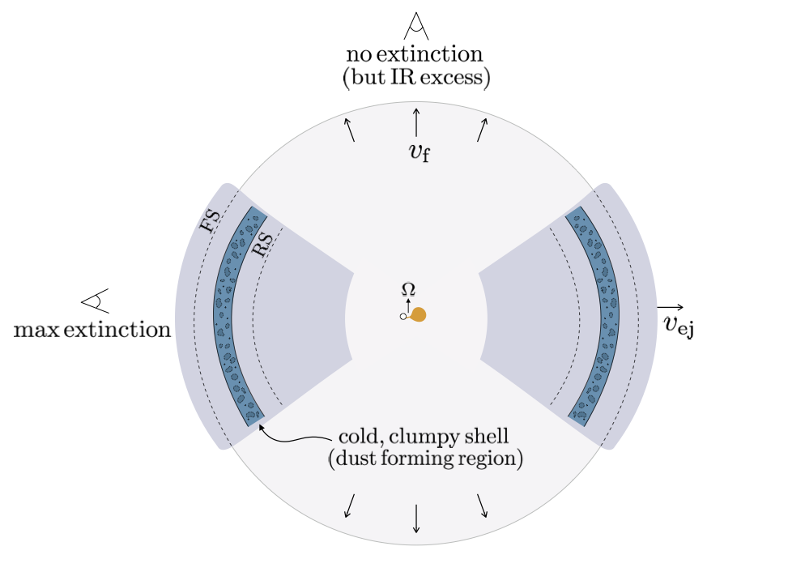

Formation of black hole inspirals in accretion disks around supermassive black holes

Star formation can occur in massive accretion disks in Active Galactic Nuclei, producing unique stellar populations which seed sources of gravitational waves, including extreme mass ratio inspirals. In this work I develop a comprehensive model of the formation of these sources, starting with solutions for the structure of accretion disks that become gravitationally unstable. I derive the properties of in-situ stellar populations, calculate the subsequent evolution of stars in the disk as they migrate and accrete surrounding gas, and determine how many stars eventually coalesce with the central massive black hole.
This work demonstrates the significance of this formation channel, quantifying how low-frequency gravitational wave sources born in accretion disks may constitute a substantial fraction of detected events.
Due to their evolution in a gaseous environment, the orbital characteristics of these systems will be substantially different from similar events that form via dynamical interactions in dry nuclei. It is critical that we develop the framework to detect these sources and analyze their waveforms, especially because their detection will provide constraints on accretion disk environments which are spatially unresolvable to electromagnetic observations. The model also has implications for many observational signatures from stellar populations in gas-rich galactic nuclei, which I plan to explore in follow up work.
Theoretical work in preparation for a space-based gravitational wave observatory
I am an active member of the LISA Astrophysics Working Group in the LISA Science Group. Our white paper, recently published in Living Reviews in Relativity, outlines the capabilities of the LISA mission for driving astrophysical discoveries.

I am currently coordinating one of the first Astro Working Group collaborative projects on a simulation comparison for black hole binary evolution in accretion disks. Here is an example of the surface density of an accretion disk with an embedded perturber, obtained from a 2-dimensional simulation using DISCO. As the BH orbits it perturbs the gas on many scales, and resolving these perturbations is important for determining its orbital evolution. Not all simulations find the same results, so it is critical to compare our techniques to better understand the fate of this system: will the binary shrink to the scale where it becomes a powerful gravitational wave source? If so, what will its orbital properties be? Can the gas dynamics produce informative electromagnetic or graviational wave signatures? This work is motivated by black hole binaries that we expect LISA to detect, but it is also applicable to studies of planetary migration, where the same process occurs but at a different scale.
Detectability of environmental imprints and eccentricity in milliHz GWs from massive black hole binaries
The evolution of supermassive black hole binaries in gas-rich environments is widely studied for both electromagnetic search campaigns and GW predictions. For binaries that coalesce in the LISA frequency band, interaction with surrounding gas can leave imprints on the waveform, as shown by Mudit Garg (UZH). Environmental interactions can also excite eccentricity in the binary, which, if measurable, can provide deeper insight into how massive black hole binaries form in their respective environments. Recently, Mudit has also shown with a full Bayesian analysis that even residual eccentricities can be measured by LISA.
Characteristic signatures of accretion disks in gravitational waves

Gas-embedded black hole inspirals experience torques from their environment that are sensitive to poorly-constrained gas properties. With a suite of hydrodynamical simulations, I find that these torques can impart unique imprints in the gravitational waveforms, which presents an opportunity to probe accretion disks solely with gravitational waves.
Interaction with gas can be present in the waveforms of extreme or intermediate mass ratio inspirals as well as binaries of intermediate mass black holes (environmental effects are relevant for more than just EMRI sources!), which was demonstrated in a recent work with Mudit Garg.
Time-variable torques on BH inspirals
My simulation studies found that torques on embedded black holes can fluctuate on short timescales. This motivated a study with Lorenz Zwick to calculate the effect of high frequency torque variability on disk-embedded binaries, which can produce multiharmonic and multiband GW emission. This is particularly relevant for EMRIs in turbulent accretion disks, or for more massive SMBH binaries surrounded by circumbinary disks.
Supermassive black hole binary evolution in circumbinary disks
The interaction of a binary with a surrounding gas disk leads to variable accretion and torques, which has critical implications for the evolution of supermassive black hole binaries during gas-driven hardening stages. A suite of simulations led by Paul Duffell demonstrate how this torque is sensitive to the binary and disc parameters. These systems are prime candidates for electromagnetic signatures associated with GW emission, which you can read about in our Astro2020 white paper.
The role of radiative shocks for dust formation in novae

Increasing evidence supports that shocks are ubiquitous in nova outflows and are responsible for powering nova emission across the electromagnetic spectrum. In this work I showed that these shocks can be radiative, producing regions in the ejecta that compress and cool rapidly, which creates prime sites for dust formation within the hot, ionized ejecta. This explains the puzzle of early dust formation in these violent eruptions and presents testable observational implications - check out our Astro2020 white paper.
email: aderdzinski (at) fisk.edu
NASA ADS Search
ORCiD
CV (pdf)